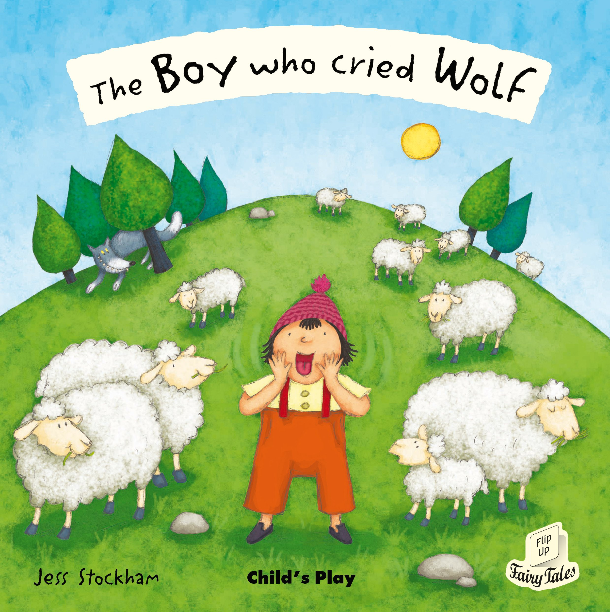

The Boy Who Cried Wolf is one of Aesop's Fables. The English idiom "To cry wolf" (Meaning "to give a false alarm") is derived from the story. 
Plot
The Boy Who Cried Wolf is about a shepherd boy who continuously tricks the local villagers into thinking his flock is being attacked by a wolf, laughing at them when they come to his aid. When a wolf attack actually occurs, his cries for help are ignored, and in modern versions of the story, he is eaten by the wolf. The original Greek version ends with the moral: "this shows how liars are rewarded: even if they tell the truth, no one believes them".
History
This fable dates back to Classical times, but the oldest known recorded copy was in Greek, and not translated to Latin until the 15th century. Due to this, it only gained popularity from Heinrich Steinhöwel. As a result, there was no agreed title. William Caxton titled it "Of the child whiche kepte the sheep" in 1484. Hieronymus Osius called it "the boy who lied", Francis Barlow "of the herd boy and the farmers" Roger L'Strange "A boy and false alarms" and George Townsend "The shepherd boy and the wolf". The current title was given by Edward Hughes, in his "Songs from Aesop's Fables".
Use in Education
Teachers have used the story as a tale about telling the truth, but a recent study by the University of Toronto, McGill University and Brock University suggests that it actually increases the chance of lying. The story also discusses responsibility. The boy is dishonest because he does not want to be responsible for the sheep, and wants entertainment. However, when dealing with the moral behaviour of adults, Samuel Croxall asks, referencing political alarmism, "when we are alarmed with imaginary dangers in respect of the public, till the cry grows quite stale and threadbare, how can it be expected we should know when to guard ourselves against real ones?"